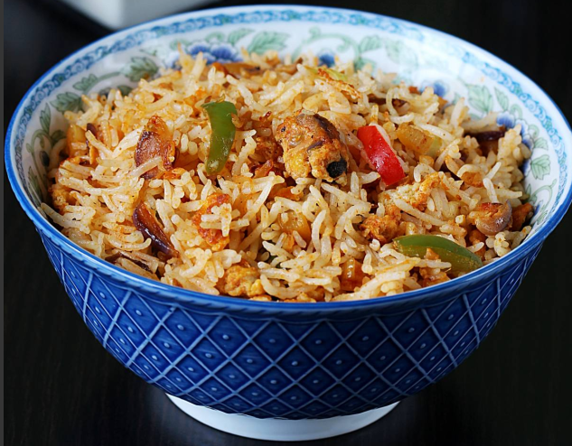

Egg Fried Rice

Description:
Fluffy and aromatic egg fried rice is a crowd pleaser. A hearty meal on the go and a satisfying dinner after a hard day at work.
When you make this dish at home, it brings back memories of those wonderful days when you gorged on Chinese delicacies with
family and caught up with friends over dim sums, herbal teas and fried rice. Profess your undying love for this egg-based dish
and you'll have some folks wondering what the fuss is all about.
Ingredients:
- 3 cups cooked rice
- 1 to 1.5 tablespoon organic soya sauce
- 1.5 teaspoon rice vinegar
- 1 tablespoon chopped garlic
- 1/4 tablespoon crushed black pepper
- 1/4 teaspoon salt
- 2 tablespoon oil
- 3 to 4 stalks of spring onion
- 3 eggs
- 1 to 1.5 tablespoon schezwan sauce
Steps:
- Heat 1.5 tablespoons of oil in a wok or pan on the highest flame. Add 1 tablespoon chopped garlic(2 cloves). Fry for about
30 to 40 seconds.
- Add 3 to 4 tablespoons spring onion whites and fry for a minute.
- Throw in half cup each of carrots, capsicums and shredded cabbage. Stir fry on the highest heat for 2 minutes. We don't
want the veggies to
become mushy. They must be crunchy so don't overcook.
- Meanwhile beat 2 eggs in a bowl until frothy. Slide the veggies to a side in the pan.
- Lower the heat and pour the eggs. Scramble and cook on medium heat. If your pan is too dry you may add more oil.
- When the eggs are just cooked(soft set), sprinkle 2 to 3 pinches of salt. Do not use lots at this stage as the sauce is salted.
- Increase the heat and pour 1 to 1.5 tablespoon soya sauce or tamari to the hot pan. You may also add any other hot sauce
if you prefer. You can also add a tablespoon of rice vinegar and 1 to 2 tablespoon of schezwan sauce.
- Add cooked and cooled rice, half teaspoon ground pepper, a bit more of salt, 3 to 4 tablespoons spring onion greens and
1 tablespoon toasted sesame oil if required.
- Increase the flame to highest and stir fry for 2 to 3 minutes. You may add more salt, sauce and black pepper to your taste.